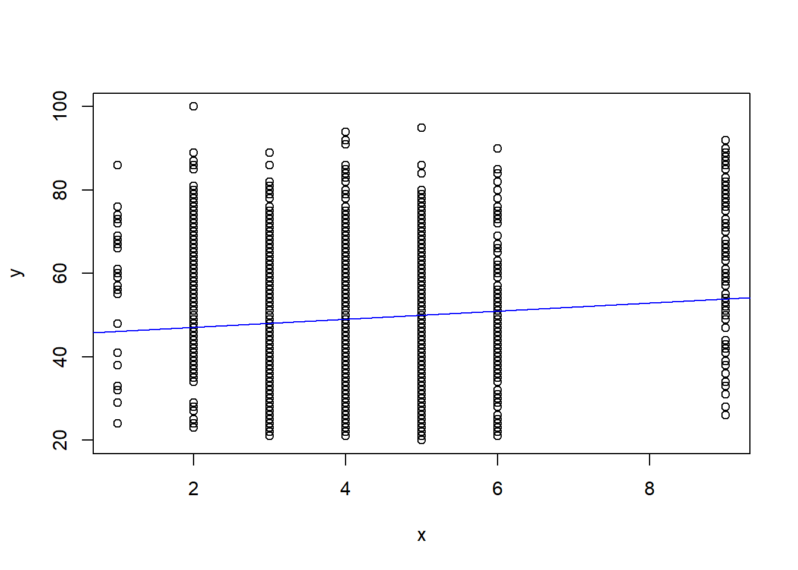
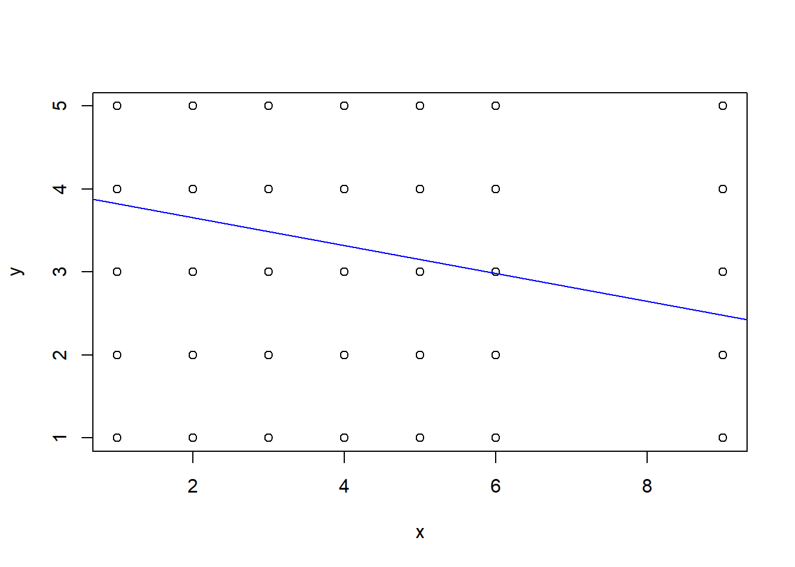
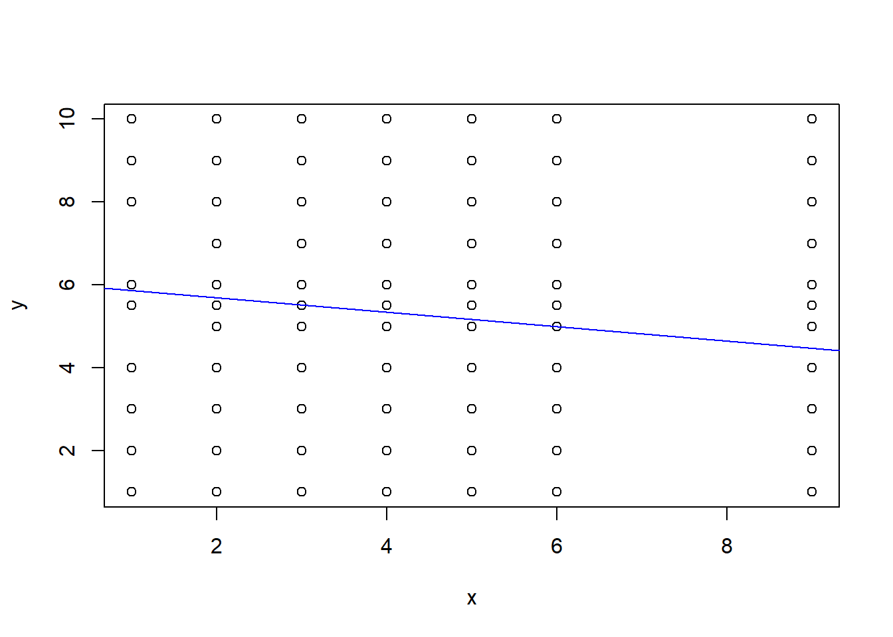

Warning: package 'tidyverse' was built under R version 4.2.3Warning: package 'ggplot2' was built under R version 4.2.3Warning: package 'readr' was built under R version 4.2.3Warning: package 'lubridate' was built under R version 4.2.3── Attaching core tidyverse packages ──────────────────────── tidyverse 2.0.0 ──
✔ dplyr 1.1.0 ✔ readr 2.1.4
✔ forcats 1.0.0 ✔ stringr 1.5.0
✔ ggplot2 3.4.1 ✔ tibble 3.1.8
✔ lubridate 1.9.2 ✔ tidyr 1.3.0
✔ purrr 1.0.1
── Conflicts ────────────────────────────────────────── tidyverse_conflicts() ──
✖ dplyr::filter() masks stats::filter()
✖ dplyr::lag() masks stats::lag()
ℹ Use the conflicted package (<http://conflicted.r-lib.org/>) to force all conflicts to become errors# A tibble: 1,690 × 8
Tondu female DPP age income edu Taiwanese Econ_worse
<dbl> <dbl> <dbl> <dbl> <dbl> <dbl> <dbl> <dbl>
1 3 1 0 59 8 4 1 0
2 5 1 0 39 7 5 0 0
3 3 0 0 63 8 5 0 1
4 5 0 0 55 5 2 1 1
5 9 1 0 76 5.5 1 0 0
6 4 1 1 64 9 2 1 1
7 9 0 0 75 1 1 0 1
8 6 1 0 54 10 5 1 1
9 9 1 0 64 2 1 1 1
10 9 0 0 59 5.5 1 0 1
# … with 1,680 more rows
Call:
lm(formula = Tondu ~ age, data = TEDS_2016)
Residuals:
Min 1Q Median 3Q Max
-3.5291 -1.1363 -0.2890 0.9701 5.1256
Coefficients:
Estimate Std. Error t value Pr(>|t|)
(Intercept) 3.590740 0.132656 27.07 < 2e-16 ***
age 0.010911 0.002555 4.27 2.07e-05 ***
---
Signif. codes: 0 '***' 0.001 '**' 0.01 '*' 0.05 '.' 0.1 ' ' 1
Residual standard error: 1.766 on 1688 degrees of freedom
Multiple R-squared: 0.01068, Adjusted R-squared: 0.0101
F-statistic: 18.23 on 1 and 1688 DF, p-value: 2.067e-05
Call:
lm(formula = Tondu ~ edu, data = TEDS_2016)
Residuals:
Min 1Q Median 3Q Max
-3.6605 -1.1898 -0.4251 1.0456 5.2809
Coefficients:
Estimate Std. Error t value Pr(>|t|)
(Intercept) 4.89583 0.10236 47.831 <2e-16 ***
edu -0.23534 0.02826 -8.327 <2e-16 ***
---
Signif. codes: 0 '***' 0.001 '**' 0.01 '*' 0.05 '.' 0.1 ' ' 1
Residual standard error: 1.726 on 1678 degrees of freedom
(10 observations deleted due to missingness)
Multiple R-squared: 0.03968, Adjusted R-squared: 0.03911
F-statistic: 69.33 on 1 and 1678 DF, p-value: < 2.2e-16
Call:
lm(formula = Tondu ~ income, data = TEDS_2016)
Residuals:
Min 1Q Median 3Q Max
-3.4440 -1.1504 -0.2972 0.8863 5.2166
Coefficients:
Estimate Std. Error t value Pr(>|t|)
(Intercept) 4.51739 0.09385 48.134 < 2e-16 ***
income -0.07340 0.01568 -4.681 3.08e-06 ***
---
Signif. codes: 0 '***' 0.001 '**' 0.01 '*' 0.05 '.' 0.1 ' ' 1
Residual standard error: 1.764 on 1688 degrees of freedom
Multiple R-squared: 0.01282, Adjusted R-squared: 0.01223
F-statistic: 21.92 on 1 and 1688 DF, p-value: 3.077e-06